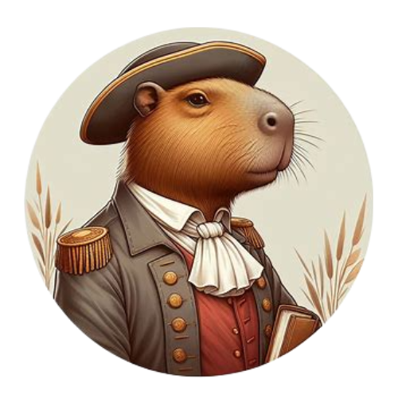
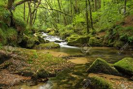
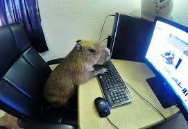

Capypédia
Oh je vois que votre choix c’est porté sur la vie de mon espèce. Eh bien suivez-moi dans notre histoire riche en adaptation. Je suis le capystorien et je vous présente... L’Histoire des capybaras.
Dans les vastes étendues des jungles sud-américaines, là où les rayons du soleil percent à travers le feuillage dense, la vie des capybaras a toujours été un récit fascinant et harmonieux avec la nature. Nous, les capybaras, sommes les plus grands rongeurs du monde, et notre existence est tissée dans le tissu même de ces écosystèmes riches et diversifiés.
Depuis des temps immémoriaux, nos ancêtres ont parcouru les rives des rivières sinueuses et des marécages luxuriants, trouvant refuge dans les zones humides où l'eau abonde. Là, nous avons prospéré, notre pelage brun doré se confondant parfaitement avec les herbes hautes qui bordent les berges.
Notre vie est régie par un rythme calme et paisible. Nous passons nos journées à nous prélasser au soleil, à nous baigner dans les eaux fraîches et à nous nourrir des plantes vertes qui poussent le long des rivières. Les liens sociaux entre membres de notre clan sont forts ; nous nous rassemblons en groupes familiaux, partageant chaleur et protection.
Mais notre histoire n'est pas sans défis. Au fil des siècles, nous avons dû faire face à des menaces venant de tous horizons. Les prédateurs rôdent dans les ombres de la jungle, cherchant à nous chasser pour nous dévorer. Les changements dans notre environnement, causés par l'homme et la nature elle-même, ont également posé des défis à notre survie.
Pourtant, malgré ces obstacles, les capybaras ont persisté. Nous sommes des survivants, adaptés à notre habitat avec une grâce et une résilience remarquables. Notre capacité à trouver des solutions créatives aux problèmes qui se dressent sur notre chemin a assuré notre survie à travers les âges.
Aujourd'hui, alors que les pressions sur notre habitat continuent de croître, nous, les capybaras, restons un symbole de la beauté et de la résilience de la nature. Nous continuons à prospérer dans nos sanctuaires naturels, espérant que notre histoire perdurera pour les générations à venir, témoignant de la force et de la magie des merveilles naturelles qui nous entourent.
 C'est assez étonnant, vous savez, comment tout a changé avec ce truc qu'ils appellent "l'Internet". Un jour, nous vivions simplement nos vies tranquilles le long des rivières, et le lendemain, nous sommes devenus des stars mondiales ! Les humains partagent des vidéos de nous en train de nager, de nous prélasser au soleil, ou même de nous faisant des câlins les uns aux autres. Je veux dire, qui aurait pensé que notre quotidien deviendrait un divertissement pour eux ?
Au début, nous n'avions aucune idée de ce qui se passait. Nous voyions ces humains pointant leurs petits appareils étranges vers nous, et nous n'y prêtions pas vraiment attention. Mais ensuite, nous avons commencé à remarquer que nos visages apparaissaient sur ces petites boîtes lumineuses qu'ils regardent tout le temps. Apparemment, les gens trouvent notre apparence mignonne et notre comportement apaisant. Qui aurait cru que nos simples activités quotidiennes seraient si captivantes pour eux ?
C'est un peu étrange de penser que nous sommes devenus célèbres sans vraiment essayer. Nous sommes juste nous-mêmes, vous savez, en train de vivre nos vies de capybaras. Mais si cela aide à sensibiliser les gens à notre espèce et à la nécessité de protéger notre habitat, alors je suppose que c'est une bonne chose. Tant que cela ne perturbe pas trop notre tranquillité le long des rivières, je suis heureux que les gens puissent partager un peu de joie en nous regardant.